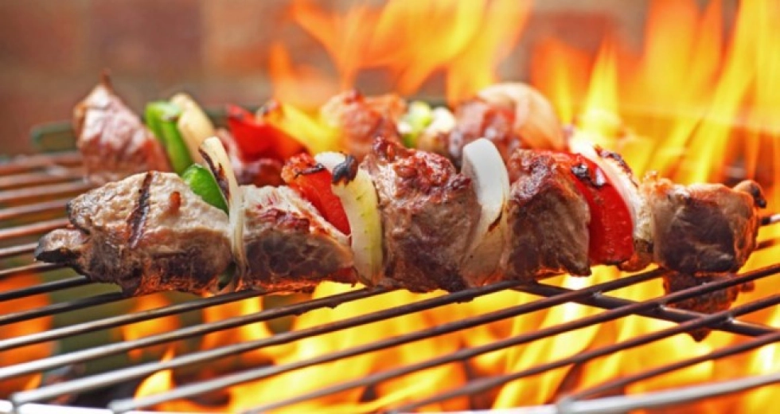

рецепт "ШАШЛИК"
Шашлик — страва традиційної кримської (кримськотатарської) кухні, м'ясо, смажене на деревному вугіллі, зазвичай з баранини, одна з найдавніших страв у світі..

Інгредієнти:
- 2 кг свининни
- 1 кг цибулі
- лавровий лист
- перець чорний і духмяний
- сіль
Рецепт
- Свинину (краще шию і реберця) порізати великими шматочками.
- Нарізати кружальцями цибулю, пом’яти, додати до м’яса, також додати спеції, ретельно перемішати.
- Залишити маринуватися на добу.
- Якщо шашлик потрібен швидше, то поставте м’ясо в тепле місце, і він буде готовий через 12 годин.
- М’ясо нанизати на шампур.
- Лимонну кислоту розвести у воді, налити у пластикову пляшку, у корку якої зробити дірочки.
- Кисла вода потрібна для поливання шашлику під час смаження.
- Можна замінити сухим вином.
- Смажити по 5хвилин з кожної сторони шашлику
- Перед тим як знімати шашлик з вогня, треба попробувати шматок шашлика
- Якщо вже готовий, то знімаємо з вогню
- Ставимо в каструлю і щільно закриваємо
- Після приготовки шашлик має пропаритись ще 10хвилин
- І тоді з лану до столу
За смаком
За смаком можете додати оцет і кетчуп. Спробуйте та вирішіть, що підходить вам.
Зберігання
Зберігайте Шашлик в холодильнику. Шашлик зберігається приблизно 2-3 дні після приготування, але для зберігання він рідко залишається